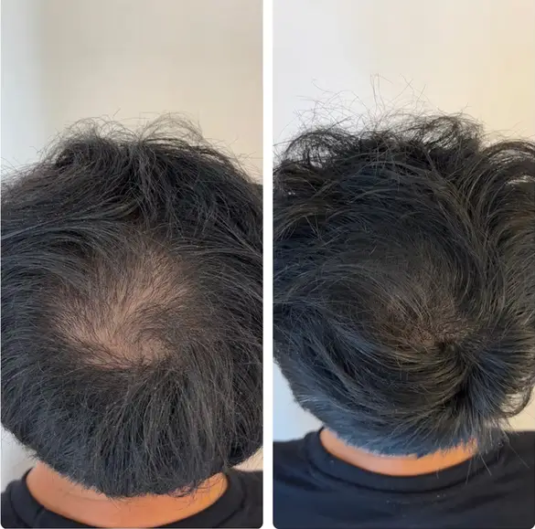

La micropigmentation capillaire est un investissement à long terme. Pour maximiser sa durée de vie et conserver un rendu naturel le plus longtemps possible, quelques règles d'entretien simples suffisent. Voici notre guide complet, réparti en deux phases : les jours qui suivent la séance, et l'entretien au long cours.
Les 5 premiers jours après la séance : la phase critique
Les premiers jours sont les plus importants. Le pigment est encore en train de se fixer dans le derme, et la peau cicatrise. Durant cette période :
- Ne pas mouiller le cuir chevelu pendant 4 jours (pas de shampoing, pas de pluie, pas de natation).
- Pas de transpiration abondante : évitez le sport intensif, le sauna, le hammam et le bain chaud.
- Ne pas gratter ni frotter la zone traitée, même si elle démange (c'est normal, c'est la cicatrisation).
- Évitez le soleil direct sur le crâne. Un chapeau ou une casquette suffit.
- Ne pas appliquer de produits (crème, huile, lotion) sans l'accord de votre praticien.
Le premier mois : laisser le résultat se stabiliser
Le pigment continue de se stabiliser pendant plusieurs semaines. Le résultat peut sembler légèrement plus sombre juste après la séance, puis s'éclaircit un peu en cicatrisant — c'est tout à fait normal. C'est pourquoi les séances sont espacées de 10 à 20 jours : pour laisser le temps à la peau de révéler le résultat final.
Durant le premier mois : continuez à éviter les expositions prolongées au soleil et les bains prolongés en piscine (le chlore peut dégrader le pigment).
L'entretien à long terme : 5 règles d'or
1. Hydratez votre cuir chevelu
Un cuir chevelu sec et squameux fait paraître le pigment terne et moins défini. Appliquez une crème hydratante légère, sans huile lourde, quelques fois par semaine. Les corps gras accélèrent la dégradation du pigment.
2. Protégez-vous du soleil
C'est le conseil le plus important. Les UV sont le principal ennemi de la micropigmentation : ils dégradent le pigment et accélèrent son estompage. Appliquez un SPF 30 minimum sur votre crâne lors de toute exposition prolongée.
3. Rasez régulièrement (pour l'effet crâne rasé)
Maintenez une longueur de 0,5 à 1,5 mm pour que la transition entre cheveux et pigment reste imperceptible. Un rasage tous les 2 à 5 jours selon votre vitesse de pousse.
4. Évitez les produits agressifs
Les shampooings anti-pelliculaires forts, les gommages du cuir chevelu et les produits à base d'alcool peuvent accélérer l'estompage. Privilégiez des produits doux, sans sulfates.
5. Planifiez vos retouches
Après 3 à 5 ans, une séance de retouche légère suffit pour retrouver la fraîcheur initiale. Chez MPC Clinique, nous suivons nos patients sur le long terme et adaptons les retouches à l'évolution naturelle du pigment.
Consultez notre guide post-séance complet
Toutes les consignes jour par jour, checklist interactive et FAQ.
Des questions sur l'entretien de votre traitement ?
Contactez-nous. Nous accompagnons nos patients avant, pendant et après le traitement.
Nous contacter